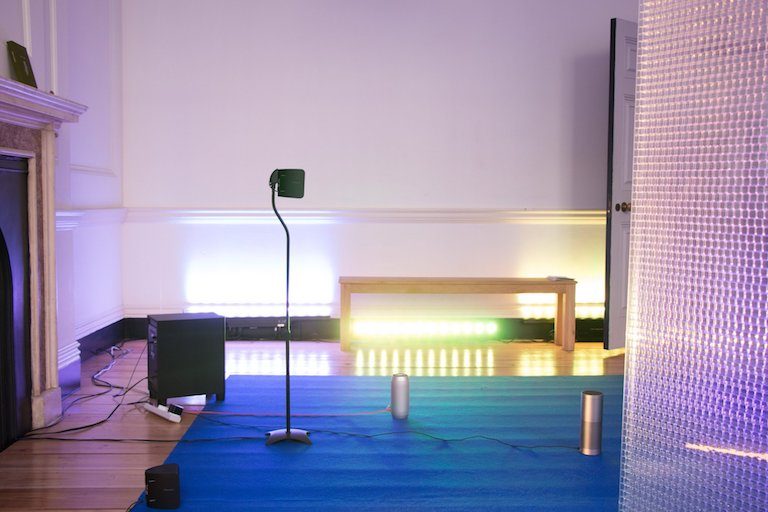
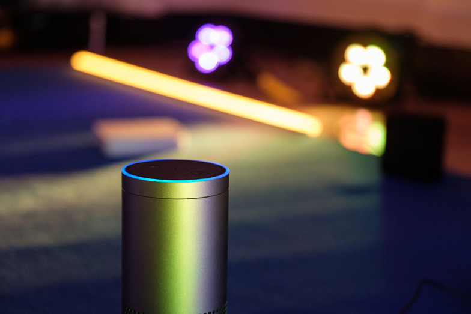

Climatotherapy
Together with Henry Cooke and Tim Cowlishaw of BBC R&D we developed an experimental Alexa skill for Nozomu Matsumoto and Nile Koetting's installation 'Climatotherapy', exhibited as part of Somerset House ASSEMBLY in November 2018.
Climatotherapy is a performance installation developed from Nozomu Matsumoto’s recent release on The Death of Rave (RAVE024). The word ‘climatotherapy’ refers to a type of physical and mental treatment which utilizes the influence of climate on the human body, exemplified by treatments in the Dead Sea or at hot springs. Comprised of sound, light, smell, ikebana and Nozomu’s 1-to-1 private concerts taking place periodically throughout the duration of the piece, virtual assistant Alexa is a key component, repurposed to generate live and enunciate various suggestions and tips throughout, what we should do, how we should live.
With these elements in dialogue, the installation becomes its own microclimate. Populated by household audio technologies, corporate messages weave through musical reproductions to create an ever-changing soundtrack for our relationship with ever-changing technologies. As our preference settings hack, repurpose and adapt our technological world into new causes, these devices become an aesthetic, a physical manifestation of the dialogue between mass industry and human environment. Climatotherapy questions how the human body is conditioned by its environment in the time and space of cloudified body, mind, and information.